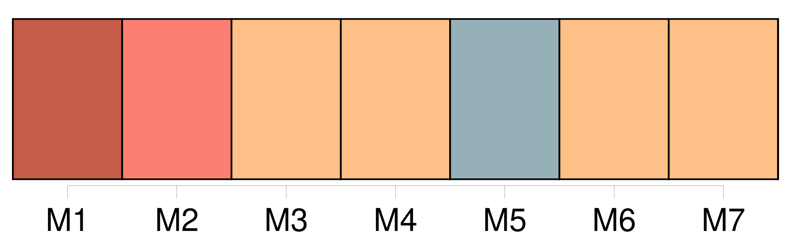

Longueur nb maillons : 32 mentions |
  |
« Or, quand nous avons eu un nouveau sous-préfet, voici maintenant dix-huit mois, il amena avec lui [son secrétaire particulier] , [un drôle de garçon] [qui] avait mené la vie dans le quartier Latin, paraît -il. « [Il] vit Mlle Fontanelle et en [devint] amoureux. On [lui] dit tout. [Il] se contenta de répondre : « Bah, c'est justement là une garantie pour l'avenir. [J'] aime mieux que ce soit avant qu'après. Avec cette femme -là, [je] dormirai tranquille.
» Alors, ayant du toupet, [il] fit des visites de noce comme si de rien n'était. [2 phrases] « Il faut vous dire qu'elle adorait [son mari] comme un dieu. Songez qu' [il] lui avait rendu l'honneur, qu' [il] l'avait fait rentrer dans la loi commune, qu' [il] avait bravé, forcé l'opinion, affronté les outrages, accompli, en somme, un acte de courage que bien peu d'hommes accompliraient.
Elle avait donc pour [lui] une passion exaltée et ombrageuse. [3 phrases]
Le préfet, entouré de son état-major et des autorités, présidait le concours des orphéons, et il venait de prononcer son discours, lorsque commença la distribution des médailles que [son secrétaire particulier] , Paul Hamot, remettait à chaque titulaire. [5 phrases] « Quand [le secrétaire particulier] lui remit son emblème, voilà que cet homme le [lui] jette à la figure en criant : « [Tu] peux la garder pour Baptiste, [ta] médaille. [Tu] lui en dois même une de première classe aussi bien qu'à moi. [15 phrases]
« [M. Hamot] avait saisi à la gorge ce grossier personnage, et ils se roulaient par terre au milieu d'un tumulte effroyable. [1 phrases]
« Une heure après, au moment où les Hamot rentraient chez eux, la jeune femme, qui n'avait pas prononcé un seul mot depuis l'insulte, mais qui tremblait comme si tous ses nerfs eussent été mis en danse par un ressort, enjamba tout à coup le parapet du pont sans que [son mari] ait eu le temps de la retenir, et se jeta dans la rivière. [11 phrases]
Et j'attendis, très ému, qu'on eût descendu la bière dans la fosse pour m'approcher [du pauvre garçon] [qui] sanglotait et [lui] serrer énergiquement la main. [Il] me regarda avec surprise à travers [ses] larmes, puis [prononça] : « Merci, monsieur. |
La ressource peut être téléchargée sur la page Ortolang
Si vous avez des questions ou vous voyez des erreurs, merci d'envoyer un mail à silvia.federzoni89@gmail.com
Site développé par S. Federzoni (contact)